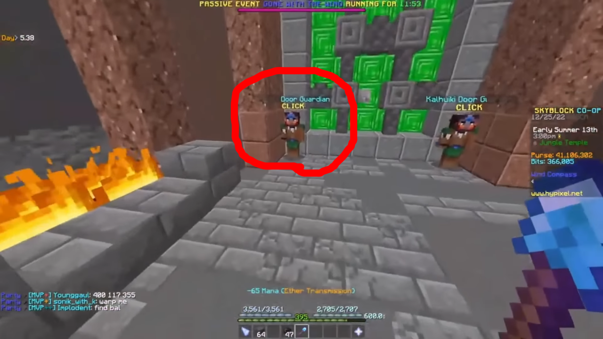
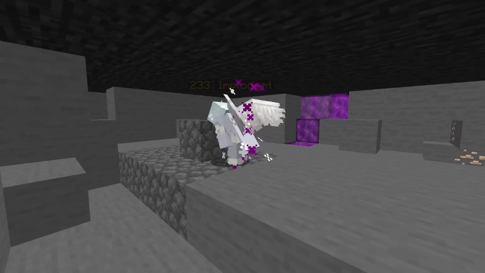

1 Walk up to the temple door and go to this temple guard and use the jungle key. Without moving, get your x y and z coords. Add 61 to
the x value, Subtract 44 from the y value, and add 18 to the z value. Then add a waypoint there, this gives you the right spot to clip in through.
2 Build a cobblestone platform below the waypoint as shown here, the highest block should be below the waypoint.
